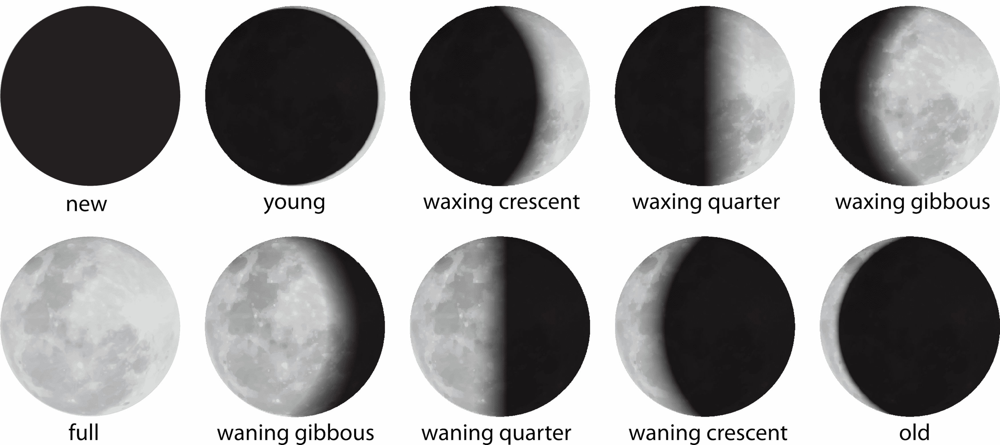
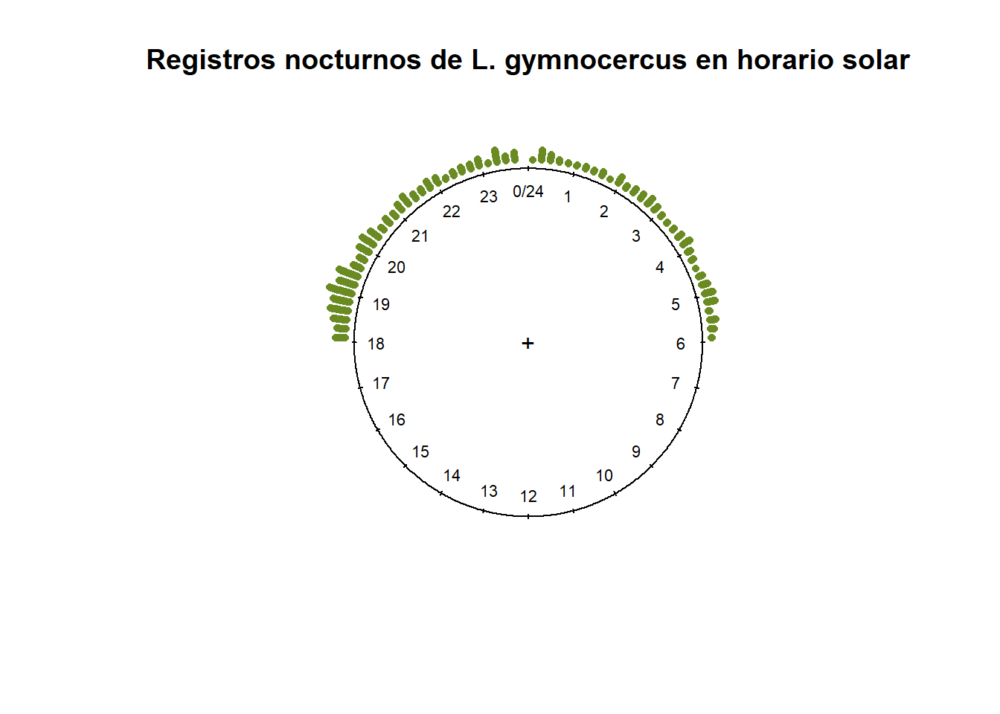
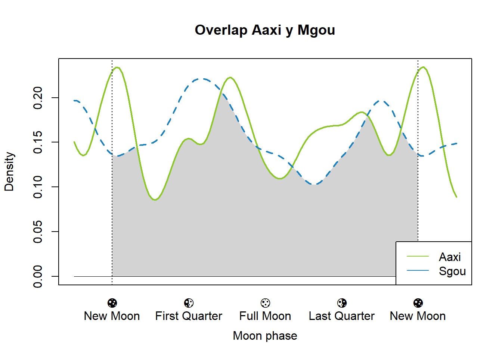
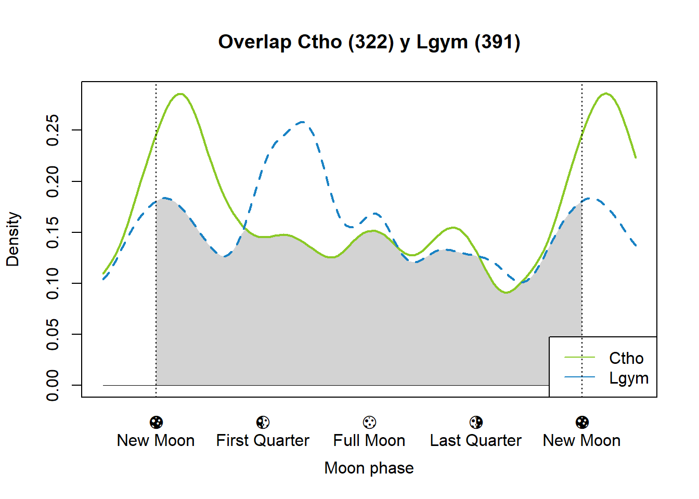
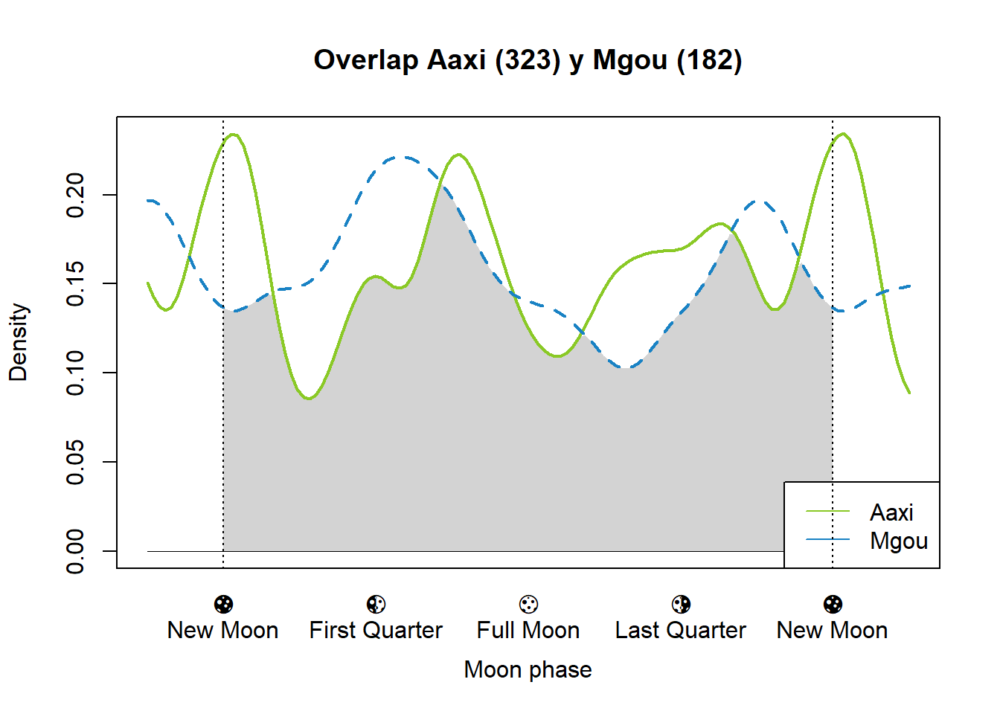
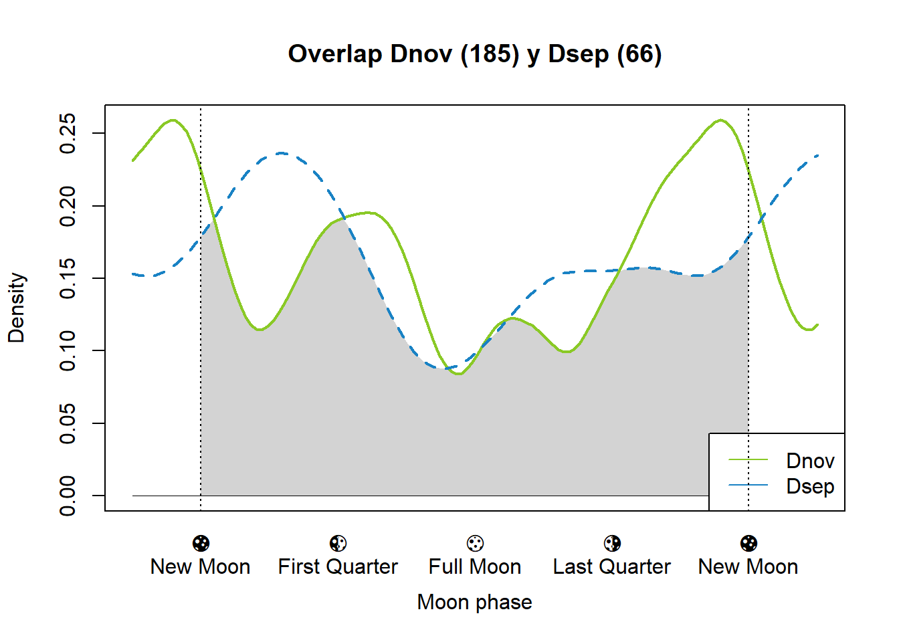
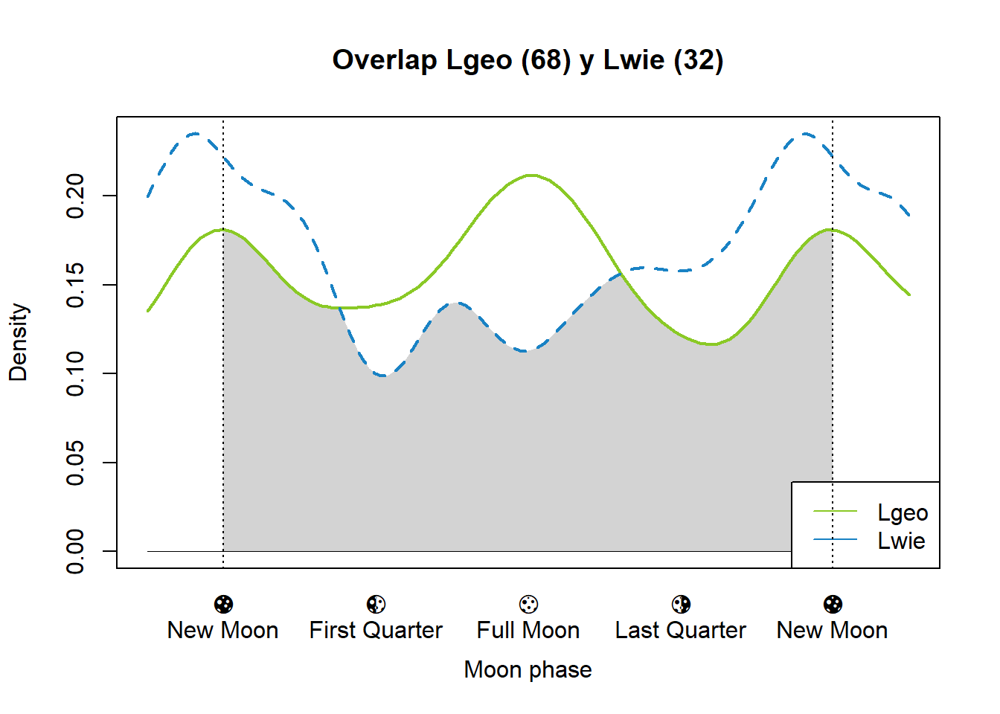

6 Fase lunar
Se necesita tener la fase lunar de cada registro, quizás lo óptimo sería analizar solo los registros nocturnos, pero en esta oportunidad agregaré este dato a todos los registros. Para obtener este dato se utilizará el paquete suncalc.
Cuando se aplica la función getMoonIllumination se obtienen los siguientes datos.
## date fraction phase angle
## 1 2024-11-11 0.7116466 0.319563 -1.978832Donde:
- 0: Luna Nueva
- Luna Creciente
- 0.25: Cuarto Creciente
- Luna Gibosa Creciente
- 0.5: Luna Llena
- Luna Gibosa Menguante
- 0.75: Cuarto Menguante
- Luna Menguante

6.1 Preparación de datos
Me parece que el análisis que incluye las fases lunares deben hacerse solo con los registros nocturnos y crepusculares. Por lo que primero se establecen que registros caen dentro de estas categorías. Siendo \(\frac{\pi}{2}\) el amanecer y \(\frac{3\pi}{2}\) el atardecer.
(Actualización) Debe hacerse con todos los registros, no solo los nocturnos. Igualmente dejo la columna “nocturnal” porque es de interés.
data_moon_illumination <- data %>%
mutate(nocturnal = ifelse(solar < pi/2 | solar > 3 * pi/2, 1, 0))Con el código de arriba se puede clasificar fácilmente entre registros nocturnos y diurnos. Utilizando como ejemplo a L. gymnocercus y se grafican los registros nocturnos se tiene:
circular_data <- circular(data_moon_illumination %>% filter(sp == "Lgym" & nocturnal == 1) %>% select(solar),
rotation = "counter",
template = "clock24")
# 00, 12, 18, 6
plot(circular_data,
stack = TRUE,
col = "#698B22",
start.sep=0.05,
sep = 0.01,
bins = 128,
ticks = TRUE,
tol = 0.2,
cex = .7,
main = "Registros nocturnos de L. gymnocercus en horario solar")
6.2 Iluminación de la Luna
Para todos los registros se obtiene el valor de la fracción iluminada de la luna, donde:
- 0 equivale a luna nueva
- 1 a luna llena.
data_moon_illumination <- data_moon_illumination %>%
mutate(moon_ilumination = getMoonIllumination(date = as_date(datetime))$fraction)6.3 Overlap utilizando fase lunar
Para realizar ajustar funciones de densidad kernel no paramétricas utilizando el paquete de R overlap se necesitan las fases lunares, no la fracción iluminada de la luna. Para esto se utilizan solo los registros nocturnos.
Obtengo las fases lunares para estos registros.
data_nocturnal <- data_nocturnal %>%
mutate(moon_phase = getMoonIllumination(date = as_date(datetime))$phase)Se ajustan los valores de las fases lunares a radianes.
Utilizo las especies de cérvidos Axis axis y Subulo gouazoubira para realizar el overlap. Primero me quedo solo con los datos de la especie y luego lo realizo.
# Datos de Aaxi
tmp1 <- data_nocturnal %>%
filter(sp == "Aaxi")
# Datos de Subulo [Mazama] gouazoubira
tmp2 <- data_nocturnal %>%
filter(sp == "Mgou")
overlapPlot(tmp1$moon_phase,
tmp2$moon_phase,
xscale=NA,
linewidth = c(2,2),
linecol = c("#8ac926", "#1982c4"),
xaxt = "n",
main = paste("Overlap", tmp1$sp[1], "y", tmp2$sp[1]),
xlab = "Moon phase",
extend = 'white')
mtext(side = 1, at = seq(0, 2 * pi, pi /2), text = c("🌑\nNew Moon", "🌓\nFirst Quarter", "🌕\nFull Moon", "🌗\nLast Quarter", "🌑\nNew Moon"), padj = 1)
abline(v=c(0, 2*pi), lty=3)
legend('bottomright', c("Aaxi", "Sgou"), lty=1, col=c("#8ac926", "#1982c4"), bg='white')
Y se obtienen los valores de estimación de overlap, demostrando una alta superposición en las curvas de densidad y por lo tanto, una mayor similitud en su actividad.
## Dhat1 Dhat4 Dhat5
## 0.8607370 0.8636668 0.87173826.4 Kernels de Superposición para Pares de Especies
A continuación, se generan gráficos de superposición de fases lunares para los registros nocturnos de todos los pares de especies de interés. En estos graficos se puede ver entre () la cantiad de registros nocturnos para cada especie.
species_pairs <- list(c("Ctho", "Lgym"), c("Aaxi", "Mgou"), c("Dnov", "Dsep"), c("Lgeo", "Lwie"))
# Bucle para generar los gráficos
for (pair in species_pairs) {
# Filtrar los datos para cada especie en el par
tmp1 <- data_nocturnal[data_nocturnal$sp == pair[1], ]
tmp2 <- data_nocturnal[data_nocturnal$sp == pair[2], ]
# Contar el número de registros de cada especie
n1 <- nrow(tmp1)
n2 <- nrow(tmp2)
# Crear el gráfico de superposición
overlapPlot(tmp1$moon_phase,
tmp2$moon_phase,
xscale=NA,
linewidth = c(2,2),
linecol = c("#8ac926", "#1982c4"),
xaxt = "n",
main = paste0("Overlap ", pair[1], " (", n1, ")", " y ", pair[2], " (", n2, ")"),
xlab = "Moon phase",
extend = 'white')
legend('bottomright', c(pair[1], pair[2]), lty=1, col=c("#8ac926", "#1982c4"), bg='white')
# Personalizar los ejes y agregar líneas verticales
mtext(side = 1, at = seq(0, 2 * pi, pi / 2), text = c("🌑\nNew Moon", "🌓\nFirst Quarter", "🌕\nFull Moon", "🌗\nLast Quarter", "🌑\nNew Moon"), padj = 1)
abline(v = c(0, 2 * pi), lty = 3)
}